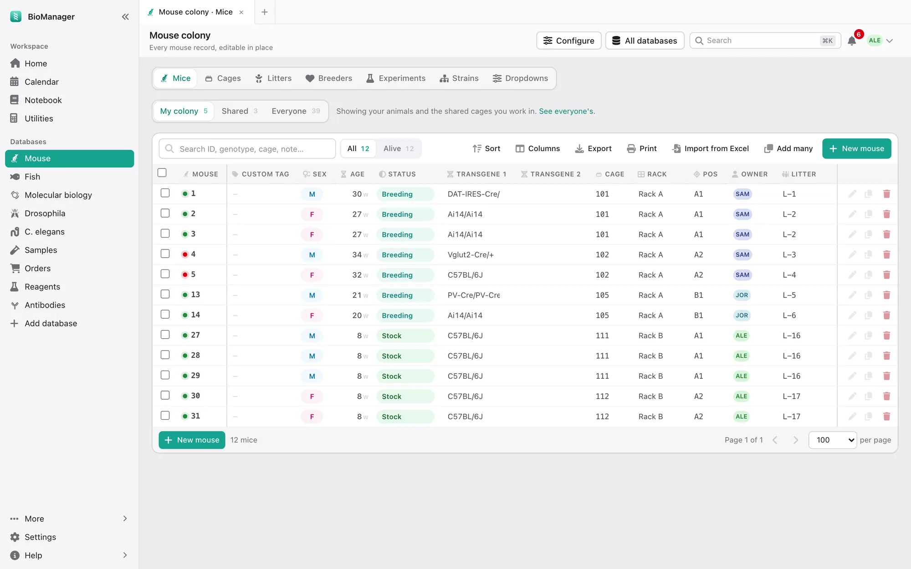
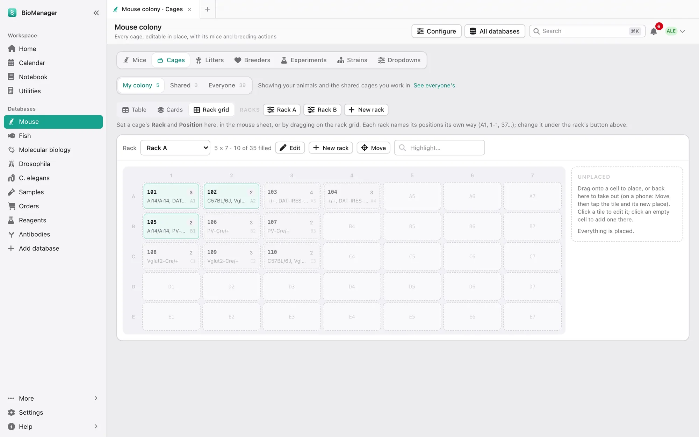

数据库
小鼠鼠群
小鼠、笼、产仔和繁殖，从出生到断奶分笼。
顶部的标签页：小鼠（Mice）、笼（Cages）、窝（Litters）、繁殖笼（Breeders）、实验（Experiments）、品系（Strains）和 下拉选项（Dropdowns）。我的鼠群 / 我的项目组 / 共享 / 全实验室（My colony / My groups / Shared / Everyone）开关改变的是你看到什么，而不是你能 编辑什么：我的鼠群是你自己的加上你参与的共享笼，我的项目组是你所在项目组的， 共享只显示共享笼，全实验室显示所有笼。在笼标签页里，每种用途都有一个筛选标签（Experiments、 Breeder……），只显示那类笼。

笼架和笼
笼 → 笼架视图 → 新建笼架（Cages → Rack grid → New rack）：设置行数、列数和位置编号方式——D7、4-7、
7D 或 1 到 80，和实物笼架上的贴纸一样。没有位置的笼会留在未放置（Unplaced）里；把它们拖
上去。每个笼都有用途（繁殖、保种、实验）、负责人、房间和笼里的小鼠。选中笼可以设置用途或负责人、
移动，或退役（Retire）。
笼有三种显示方式。表格（Table）：每笼一行，小鼠列在下面（可直接编辑），还有操作按钮； 产仔（Litter born）和断奶到期（Wean due）紧跟在小鼠后面，什么时候该断奶一目了然。直接改写笼号就能 重新编号（小鼠跟着走；与其他笼重号会被拒绝）。 全部收起（Close all）把每个笼折叠成一行（页面会记住），全部展开（Open all）再展开；行首的箭头 或小鼠数量可以单独展开或收起一个笼。卡片（Cards）：每笼一张卡片——位置、用途、负责人、品系、断奶时间、笼里的小鼠和同样的 操作——有自己的搜索框和活跃、繁殖、我的（Active、Breeding、Mine）筛选。笼架视图（Rack grid）：从正面看笼架。页面 会记住你上次用的方式。

小鼠
- 新建小鼠（New mouse）添加一只，批量添加（Add many）添加一批新的（或载入用下载模板（Download a template）做的 CSV），
从 Excel 导入（Import from Excel）用于你已有的表格（方法）。在批量添加里，笼号填
new就把这一批放进一个新笼；同时有雌雄时，雌雄各进一个新笼，除非勾选雌雄放在 同一个新笼（Keep both sexes in one new cage）。在预览里，new-2、new-3……表示更多的新笼，如果某个新笼 会同时有雌雄，会特别指出。 - 每只小鼠有性别、出生日期（年龄以周显示）、状态——breeder、experiment、geno、transfer、sac（繁殖、实验、待鉴定、转出、处死）——最多四个 转基因、基因型、笼、窝、负责人和备注。出生日期不能是未来的日期。
- 选中小鼠可以设置字段（负责人、状态、转基因、笼、备注、死亡日期）、加入实验（Add to experiment）或处死（Sac）。 设为 sac 或填写死亡日期就结束这条记录；它会留在历史里。
繁殖：从产仔到断奶
在笼（Cages）标签页，展开一个繁殖笼（点箭头或小鼠数量），或在卡片（Cards）里找到它： 产仔（Litter born）、基因型鉴定（Genotyping）和断奶（Wean）按钮都在那里，只出现在用途为 Breeder 或 Breeding 的笼上。创建窝（Create litter）按 L-1、L-2、L-3…… 给每一窝编号（也可以自己输入 ID）。
- 产仔会询问出生日期（默认今天，可修改；未来的日期会被拒绝），并记录 这次生产。BioManager 自动算出断奶日（P21）和基因型鉴定日（P28，或在 实验室设置里选定的天数），到期时会出现在首页和日历上——两处是同一份列表。一个笼只记一个 产仔日期，所以新的一窝会替换上一窝：如果上一窝的仔鼠还在笼里，先给它们断奶。
- 基因型鉴定会询问父本、母本和仔鼠数量；创建窝（Create litter）建立这一窝，并为每只仔鼠 建一条小鼠记录，状态设为 geno。它们会留在首页的基因型鉴定队列里，直到你把它们的状态（Status）从 geno 改掉；只录入基因型并不会让它们离开队列。
- 断奶会打开断奶并分笼（Wean and distribute pups），已经填好这个笼的仔鼠，雌雄分行： 断奶并移动（Wean and move）把每一行送到新笼或已有的笼，或者标记已断奶，稍后再移动幼崽（Mark weaned, move pups later）。无论哪种，这一窝 都会标为已断奶，并从首页和日历上消失。小于 P18 的仔鼠需要你确认后才能断奶。
繁殖笼（Breeders）列出繁殖笼——笼架和位置、雌雄各几只——以及它们的繁殖力，并标出超过 30 周的 繁殖鼠。领用（Pick）把一个繁殖笼 转到你名下；原负责人会收到通知。
实验、品系、下拉选项
- 实验（Experiments）把小鼠组成一个队列，分成处理组，记录每天对它们做了什么，以及体重： 见实验：适用于所有动物。（实验记录本里的实验是实验记录；这里的是 动物。）
- 品系（Strains）是实验室的品系和等位基因参考列表。
- 下拉选项（Dropdowns）保存每列可选的选项，让全实验室用同样的词。所有人都能看到；只有管理员 能修改。